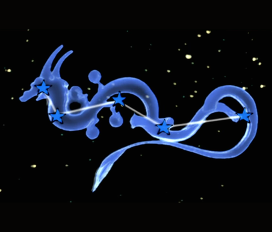

Yomigami
O primeiro a ser encontrado, servindo como um tutorial para o conhecimento de como vamos adquirir os celestial brushs.
Encontrado em River of the Heavens.
Pincel Celestial: Rejuvenation
Localização

A constelação de Yomigami está em River of the Heavens. A localização está marcada no mapa acima.